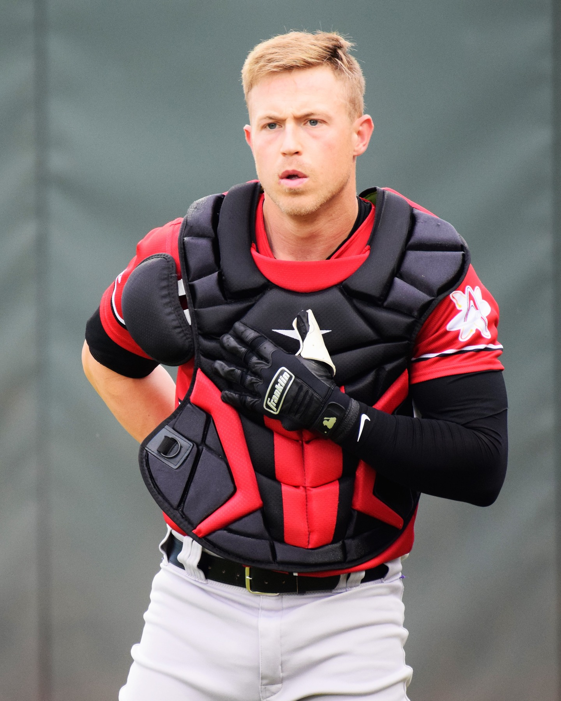

Athletics 4, Red Sox 3: Brian Serven's Homer Holds Up, Tommy White Goes 4-for-4
Gage Jump gave this team exactly what it needed for six innings, and Brian Serven made sure it counted for something. Tommy White had the night of his season, four hits in four trips, and Hogan Harris had to survive a two-run ninth to make it stand up. Athletics win 4-3. A's improve to 45-62.

For a team with nothing left to play for but the standings' bottom line, Sutter Health Park still had a game worth watching Tuesday night, and for once the Athletics were the ones making the other lineup sweat. Gage Jump took a shutout into the seventh, working around four walks with seven strikeouts over six innings, the kind of start that does not show up as a win on paper for a rebuilding staff unless the offense finally decides to back it up. This time it did.
Henry Bolte led off the second with a single and came around to score on a Tommy White single, the only run either side could scratch out for five innings. Then the seventh inning arrived, and Brian Serven turned a tight, low-event game into something manageable. Serven drove a pitch 419 feet to center for a two-run homer that scored Bolte ahead of him, and just like that the Athletics were up 3-0 in a game that had felt like it might stay a one-run affair all night. White, who finished a perfect 4-for-4 at the plate, kept the line moving in the eighth with an RBI double that scored Bolte again, running the lead to 4-0 and giving the bullpen actual room to work with.
It nearly was not enough room. Luis Medina worked around trouble in relief before handing it to Hogan Harris for the ninth, and Harris did not make it easy. Wilyer Abreu and Masataka Yoshida strung together singles to cut it to 4-1, and Connor Wong turned on a pitch and drove it 394 feet to left for a two-run homer that pulled Boston back within one, 4-3, with the tying run suddenly very real. Harris settled in after that, closing the door for his first save of the year and turning a laugher into the kind of nervy finish that makes a July win actually feel like something.
Jake Bennett took the loss for Boston despite battling through six-plus innings, undone mostly by the one swing from Serven that changed the shape of the whole night. For the Athletics, this is what the last two months of a lost season are supposed to look like: a promising young arm getting outs deep into a game, a hitter having the best night of his year, and a bullpen making it hold up even when it gets uncomfortable. A's win 4-3, improve to 45-62, and take the series opener at home.
More coverage: A's section · Columns · Bay Area Sports Blog home